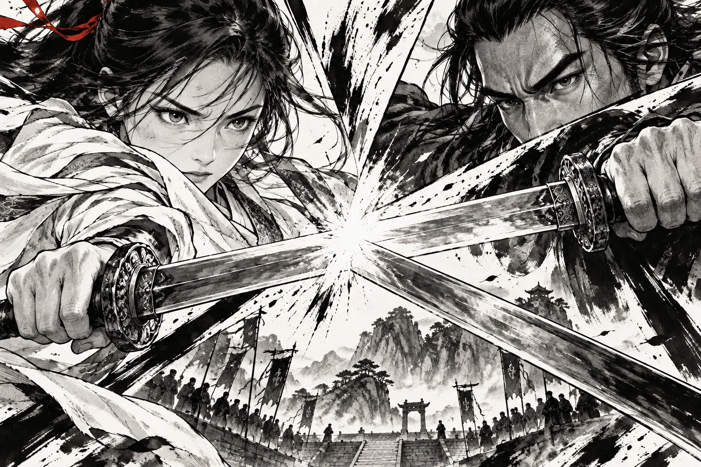

山門 · 相遇
山門 · 相遇
交鋒 · 試鋒A · 滴墨生花
落筆一點，濕邊沿紙纖維緩緩擴散。
2.8 秒 · 墨暈最明確
B 已依你的選擇融合：保留游墨流動，以 A 的中央暈開展出漫畫。三版使用相同畫面，可重播或拖曳進度比較。
山門 · 相遇
交鋒 · 試鋒落筆一點，濕邊沿紙纖維緩緩擴散。
2.8 秒 · 墨暈最明確
山門 · 相遇B 的游墨水痕 × A 的中央揭幕。
3.2 秒 · 漫畫從中央徐徐展開
山門 · 相遇薄墨多層交疊，輕柔地化入下一幕。
3.6 秒 · 最輕、最緩
正在準備墨色…
全站預設已套用 B 融合版；A、C 的試用只對該網址生效。偏好減少動態效果時，本頁先保持靜止；可手動重播或拖曳比較。